Flohmarkthelfer
Verhilft ihrem Flohmarkt zum Erfolg!
Webseite
Auf der Webseite finden sich von Administratoren verwaltete Informationen. Verkäufer registrieren sich hier, um an kommenden Flohmärkten teilnehmen zu können und mit erfolgter Reservierung ihre Artikel einzugeben und die Etiketten dafür auszudrucken.
Hauptseite
Der Inhalt ist mit freien Bildern und Texten erweiterbar. Alle aktuellen und kommenden Flohmärkte werden angezeigt.
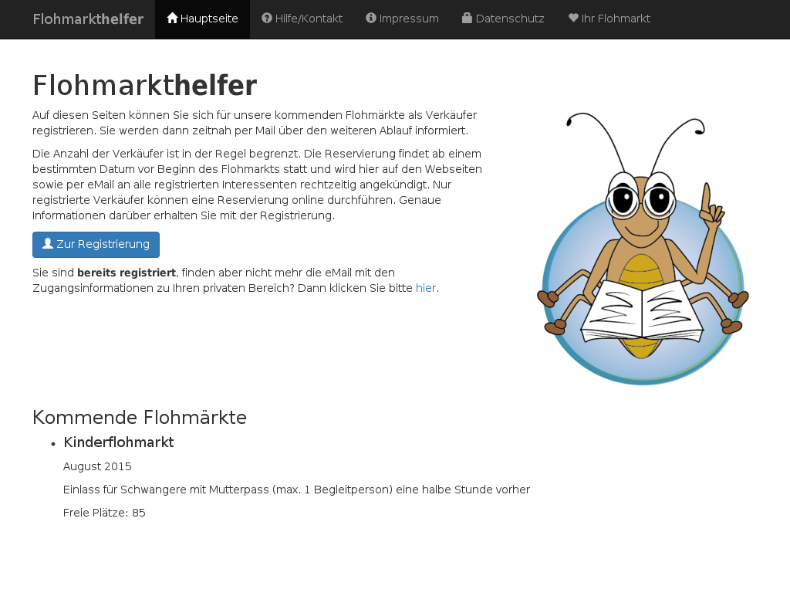Verkäufer müssen sich registrieren, um an aktuellen und zukünftigen Flohmärkten teilnehmen zu können.
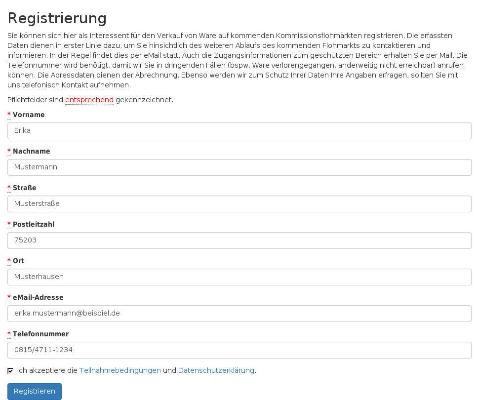In der eMail zur Registrierungsbestätigung befindet sich ein Link zum geschützten Bereich des Verkäufers.
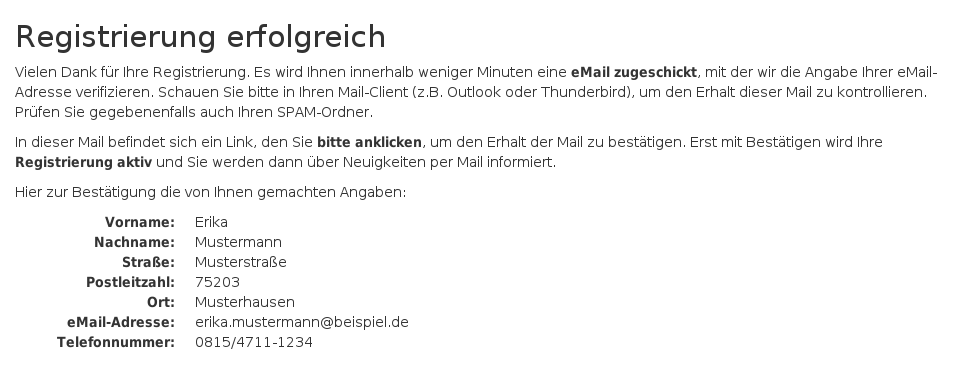Geschützter Verkäuferbereich
Von hier aus kann der Verkäufer seine Reservierungen verwalten, Rechnungen einsehen, Artikel eingeben und Etiketten drucken.
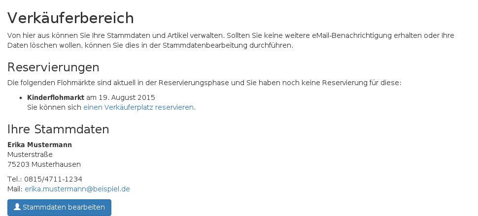Verkäufer können über den geschützten Bereich oder direkt aus einer eMail zur Reservierugnseinladung für einen Flohmarkt die Reservierung durchführen.
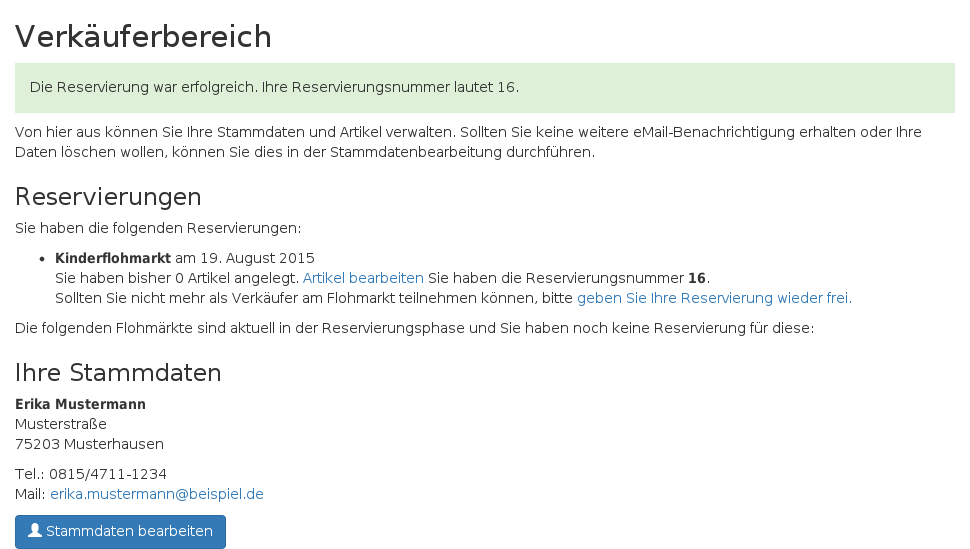Sollten alle Verkäuferplätze bereits belegt sein, kann sich ein Verkäufer auf die Warteliste setzen lassen und bekommt bei Freiwerden von Verkäuferplätzen eine Mail.
Nur mit Reservierung ist die Artikeleingabe möglich.
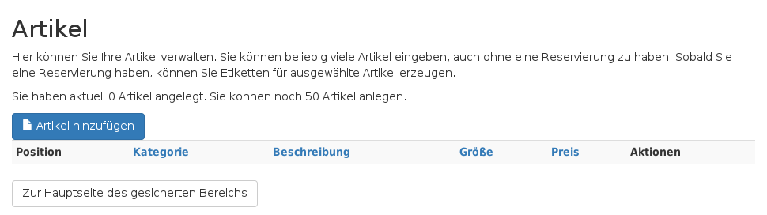Kategorie und Beschreibung erscheinen auf dem Etikett. Die Beschreibung sollte genau genug sein, um bei Etikettenverlust den Artikel wieder zuordnen zu können.
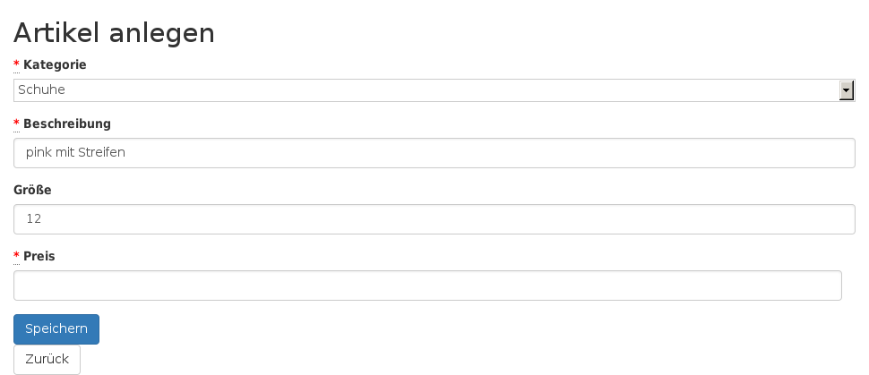Die Artikelbearbeitung ist bis zum Etikettendruck möglich.
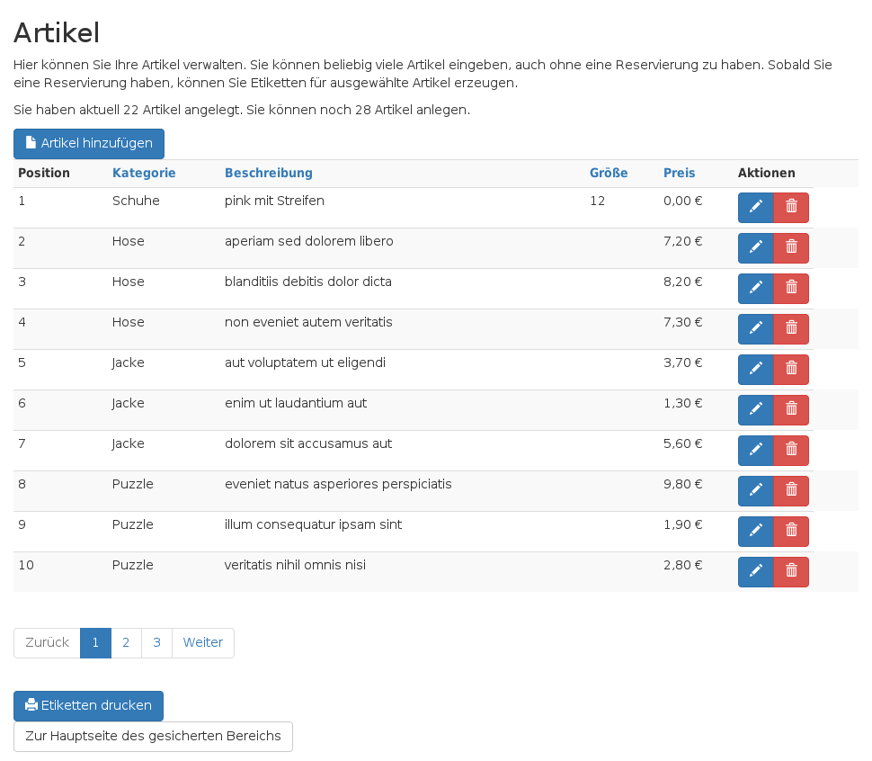Etiketten können individuell für jeden Artikel erzeugt werden.
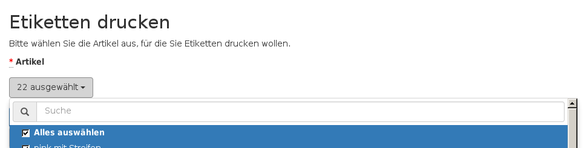Die Etiketten werden als PDF-Datei erzeugt und können ausgedruckt werden.
Nach Abschluss des Flohmarkts haben die Verkäufer die Möglichkeit zur Bewertung.
Adminbereich
Dieser Bereich ist nur über eine Anmeldung mittels eMail-Adresse und Passwort möglich
Die Startseite zeigt einige Statistiken
Ein Ändern des Zugangspassworts und ein Abmelden ist jederzeit möglich

Das Passwort muss sicher sein. Es müssen Großbuchstaben, Ziffern und Kleinbuchstaben verwendet werden.

Termine
Hier verwaltet man aktuelle und zukünftige Termine.
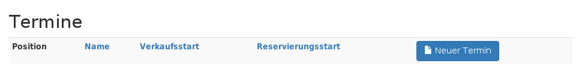In der Terminanzeige können Reservierungen verwaltet sowie die Bewertungen der Verkäufer angeschaut werden.
Reservierungen können auch vor Reservierungsstart im Verwaltungsbereich vorgenommen werden.
Reservierungen können auch wieder gelöscht werden.
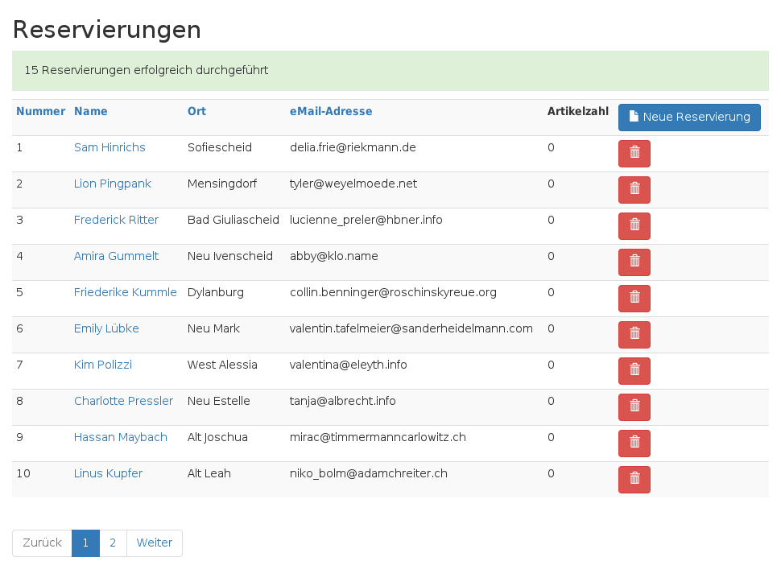Die Bewertungen können nach Abschluss des Flohmarkts betrachtet werden. In der Regel geben ca. 10% der Teilnehmer eine Bewertung ab.

Verkäufer
Hier können die Verkäufer verwaltet werden.
Über die Verkäuferdetails kann man die Reservierungen und angelegten Artikel einsehen
Eine Bearbeitung oder ein Neuanlegen von Verkäufern ist möglich.
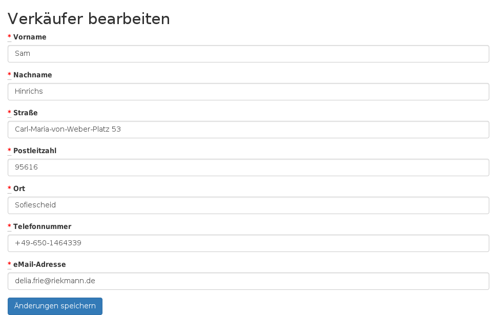Kategorien

Die Kategorien der Artikel sind individuell konfigurierbar.
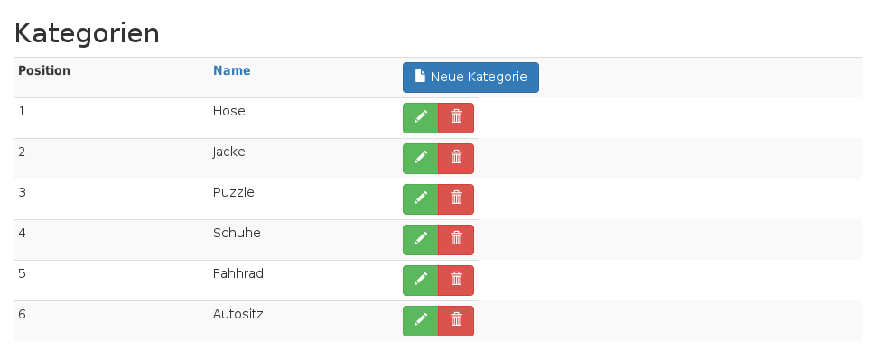eMails
Eine Vorauswahl der Empfänger kann getroffen werden.
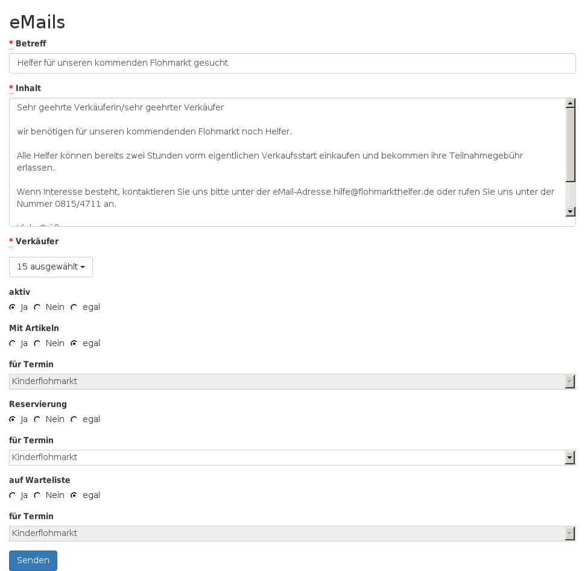Einzelauswahl ist ebenso möglich.
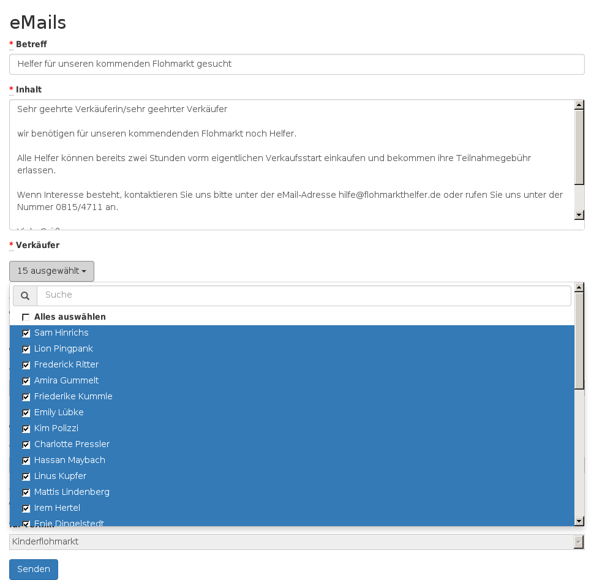Flohmarkthelfer Kassensystem
Mit dieser Software wird die Verwaltung, der Verkauf und die Abrechnung vor Ort auf dem Flohmarkt durchgeführt. Jede Kasse kann für sich alleine funktionieren. Die Transaktionen (Kauf, Storno) werden mit im Netzwerk verbundenen anderen Kassen ausgetauscht.
Die Installation erfolgt sehr einfach über eine Setup-Datei.
Standard-Ansicht
In dieser Ansicht stehen die für eine Kasse notwendigen Funktionen zur Verfügung.

Mit Hilfe eines Barcode-Scanners (oder falls notwendig per Eingabe über Tastatur) werden die Artikelnummern erfasst.
Mit Abschluss des Verkaufs kann das Wechselgeld berechnet werden. Optional (konfigurierbar) kann auch die PLZ des Käufers für statistische Zwecke erfasst sowie eine Rechnung erzeugt werden.
Stornos sind für verkaufte Artikel möglich, sollte ein Käufer die Ware reklamieren.
Mit der Artikelsuche lassen sich die Artikelnummern und Preise finden, sollte einmal ein Etikett abgefallen sein.
Es können jederzeit Statistiken über den aktuellen Kassenstand gesehen werden.
Der Hilfe-Knopf signalisiert anderen Kassensystemen im Netzwerk ein Problem und die Zentrale kann so zu Hilfe eilen.
Erweiterte Ansicht
Es stehen zusätzliche Verwaltungsfunktionen bereit, die zur Abgabe, Rückgabe und Abrechnung benötigt werden
Es kann ein Unterschriftenlistenformular ausgedruckt werden, welches die Verkäufer bei Abgabe ihrer Artikel noch einmal unterschreiben müssen.
Analog gibt es ein Unterschriftenlistenformular für die Abholung der nicht verkauften Artikel und Erlöse.
Bei der Annahme der Artikel können die Etiketten probeweise gescannt werden.
Stellt sich dabei heraus, dass diese nicht lesbar sind oder dass sie fehlen, können frische Etiketten erzeugt werden.
Sind nur die Barcodes nicht lesbar, kann man diese auf Klebeetiketten ausdrucken und auf die bestehenden Etiketten anbringen.
Die Abrechnung kann individuell pro Verkäufer oder für alle zusammen erstellt werden.